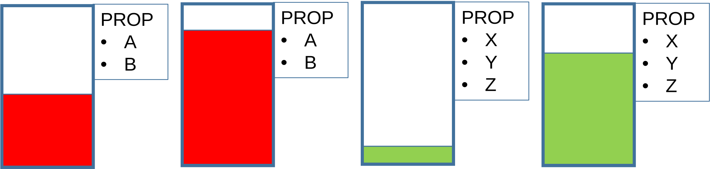
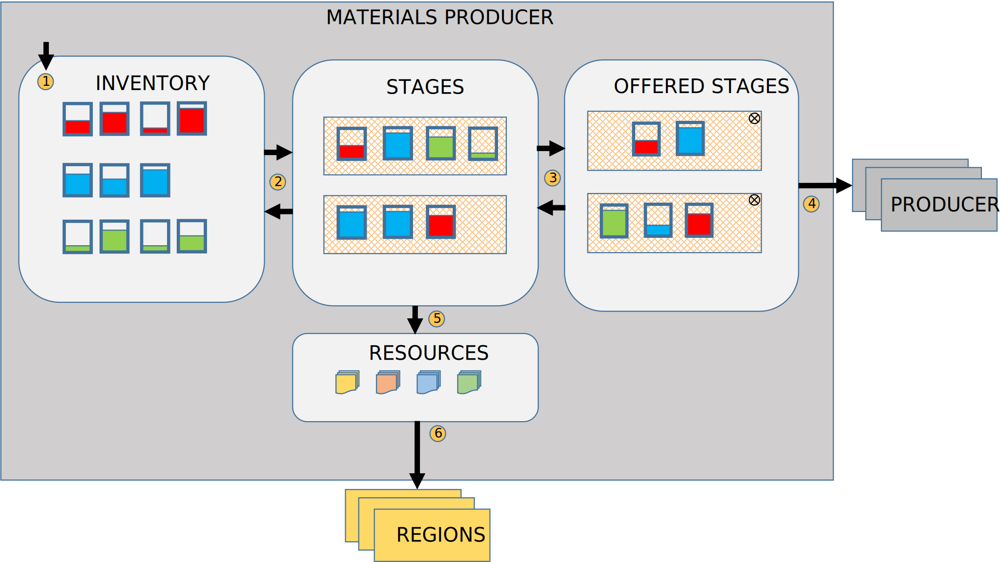

12 Materials Plugin
The materials plugin manages the transformation of materials into resources. It is dependent on the resource and regions plugins. A material is a real-valued, non-negative quantity of a tangible substance such as eggs, blood products, purified water, etc. These materials are used in the manufacture of resources such as vaccines, antivirals and other medicines. The plugin defines several key concepts:
- Material Id – The identifier for a material substance used in the manufacture of resources
- Batches – A real valued, non-negative, amount of a material
- Materials Producers – A physical site of manufacture where materials may be manipulated into resources
- Stages – A grouping of batches used to organize the manufacturing process
The plugin represents these material transformations in a low fidelity manner providing only the basic structures and ensuring numerical consistency. Material amounts are guaranteed to be non-negative, finite values. Direct mixing of quantities of different materials is not allowed and all material operations are conducted locally to a materials producer. Expiration of materials, the representation of specific chemical or mechanical processes and other higher fidelity considerations are left to the modeler using the plugin.
The batch is the basic unit of material (Figure 12.1). Each batch is a non-negative, finite amount of a single material and has property values associated with the material. Material properties are modeler defined and specific to each material type.
The flow and transformation of materials is diagramed in Figure 12.2.

Material are created in batches and placed into the inventory of a Materials Producer. Material amounts may be exchanged between batches and batches may have individualized property value assignments.
Batches may be grouped onto stages. A stage represents an ongoing process that is possibly transforming the materials. Batches may be removed from staging and placed back into inventory.
Stages may be offered to other materials producers. Once offered, the stage and its batches cannot be altered until the offer is revoked or the stage is transferred.
An offered stage can be transferred to any materials producer where it will be placed with the non-offered stages of that producer. This ensures that materials cannot interact across multiple locations until a physical transfer has occurred.
A non-offered stage can be transformed into a discrete amount of a single resource. The stage and its associated batches are destroyed in this process. Alternatively, the stage can be transformed into a single batch of some material that is then placed into the inventory of the materials producer.
Resources produced by a materials producer are stored on the materials producer and can be distributed to any region(s) in a piecemeal fashion. Resource flow to and from people is restricted to the region that is associated with the person.
12.1 Plugin Data Initialization
The plugin is initialized using a MaterialsPluginData object that:
- Contains material producer ids
- Defines materials producer properties
- Sets materials producer property values
- Sets materials producer initial resource levels
- Initializes stage and batches in initial inventory
- Defines batch property properties
- Sets initial batch property values
12.2 Plugin Behavior
The plugin adds a single data manager to the simulation as an instance of the MaterialsDataManager that is initialized with the MaterialsPluginData.
12.3 Data Manager
The data manager manages the batch and stage inventories of the materials producers as well as managing the relevant property values and material transformations to resources. The data manager provides public methods that:
- Defined a new material type
- Add and remove batches
- Add and remove stages
- Move batches to and from stages
- Exchange materials between batches
- Offer stages for distribution to other materials producers
- Move stages between producers
- Add materials producers
- Define various properties for producers and batches
- Set various property values
- Transform stages into new batches
- Transform stages into resources
- Distribute resources to regions
- Provide a wide range of materials related queries
- Details per batch and stage
- Inventories by producer/material type
- Offered stages that can be transferred
The data manager also produces observable events:
- BatchAdditionEvent – when a batch is created
- BatchAmountUpdateEvent – when material is exchanged between batches
- BatchImminentRemovalEvent – when a batch is about to be removed from the simulation
- BatchPropertyDefinitionEvent – when a new material property is defined
- BatchPropertyUpdateEvent – when a batch property value is updated
- MaterialIdAdditionEvent. – when a new material type is added
- MaterialsProducerAdditionEvent – when a new materials producer is added
- MaterialsProducerPropertyDefinitionEvent – when a new materials producer property is defined
- MaterialsProducerPropertyUpdateEvent – when a material producer property value is updated
- MaterialsProducerResourceUpdateEvent – when a resource amount is added to a materials producer
- StageAdditionEvent – when a stage is created
- StageImminentRemovalEvent – when a stage is about to be removed from the simulation
- StageMaterialsProducerUpdateEvent – when a stage is exchanged between materials producers
- StageMembershipAdditionEvent – when a batch is added to a stage
- StageMembershipRemovalEvent – when a batch is removed from a stage
- StageOfferUpdateEvent – when a stage’s offer state is updated
12.4 Example Code (Lesson 19)
Example_19.java shows the use of the materials plugin. In it we will examine:
- The initialization of the materials plugin
- The flow of materials and resources between regions and materials producers
- The observation of materials events
The example includes nine plugins:
- Materials plugin – (GCM core plugin) used to manage materials
- Resources plugin – (GCM core plugin) used to manage resources
- People plugin – (GCM core plugin) used to manage people
- Groups plugin – (GCM core plugin) used for spreading infections to people via their homes, schools and work places
- Person properties plugin– (GCM core plugin) used to decorate properties onto people
- Global properties plugin– (GCM core plugin) used to store policies and initial conditions
- Stochastics plugin – (GCM core plugin) used to generate random numbers used in various decisions
- Regions Plugin– (GCM core plugin) used for resource flow
- Model plugin – (local plugin) used to introduce five actors that will:
- Load the population
- Manage infectious contacts
- Manage vaccinations
- Produce antigen used in vaccine production
- Produce vaccines
12.5 Model
The example’s model represents a disease that is preventable through vaccination. People at the start of the simulation are either immune or susceptible and some of the susceptible adults are infected. The disease is transmitted via home, work, and school environments. Vaccination is the only disease mitigation strategy and vaccinated people do not infect others nor can be infected. Vaccine production is started once a threshold of infections is reached and continues until adequate vaccine has been produced to cover the entire population. Vaccines are modeled as a resource and are produced using several materials by two actors. The first of these actors produces antigen materials that are used in the production of the vaccine by the second actor.
12.6 Model Execution
The example’s execution is shown in Code Block 12.1
private void execute() {
ExperimentParameterData experimentParameterData = ExperimentParameterData.builder()//
.setThreadCount(8)//
.build();
Experiment.builder()//
.addPlugin(getMaterialsPlugin())//
.addPlugin(getResourcesPlugin())//
.addPlugin(getGlobalPropertiesPlugin())//
.addPlugin(getPersonPropertiesPlugin())//
.addPlugin(getStochasticsPlugin())//
.addPlugin(getRegionsPlugin())//
.addPlugin(getPeoplePlugin())//
.addPlugin(getGroupsPlugin())//
.addPlugin(ModelPlugin.getModelPlugin())//
.addDimension(getInfectionThresholdDimension())//
.addDimension(getCommunityContactRateDimension())//
.addDimension(getInitialInfectionsDimension())//
.addDimension(getR0Dimension())//
.addExperimentContextConsumer(getNIOReportItemHandler())//
.setExperimentParameterData(experimentParameterData).build()//
.execute();//
}The first action is to add the materials plugin (Code Block 12.2, Code Block 12.3, Code Block 12.4). Only the material producer id values contained in the MaterialsProducer enumeration and the material ids contained in the Material enumeration are added to the plugin’s data.
private Plugin getMaterialsPlugin() {
final MaterialsPluginData.Builder builder = MaterialsPluginData.builder();
for (final MaterialsProducer materialsProducer : MaterialsProducer.values()) {
builder.addMaterialsProducerId(materialsProducer);
}
for (final Material material : Material.values()) {
builder.addMaterial(material);
}
final MaterialsPluginData materialsPluginData = builder.build();
return MaterialsPlugin.builder().setMaterialsPluginData(materialsPluginData).getMaterialsPlugin();
}public enum MaterialsProducer implements MaterialsProducerId {
VACCINE_PRODUCER, //
ANTIGEN_PRODUCER;
}public enum Material implements MaterialId {
VIRUS, //
GROWTH_MEDIUM, //
ANTIGEN, //
ADJUVANT, //
PRESERVATIVE, //
STABILIZER;//
}The next action is to add the resources plugin (Code Block 12.5, Code Block 12.6). Only the resource id values contained in the Resource enumeration are added to the plugin’s data. Region and person resource levels are initialized to zero.
private Plugin getResourcesPlugin() {
final ResourcesPluginData.Builder builder = ResourcesPluginData.builder();
for (final ResourceId resourceId : Resource.values()) {
builder.addResource(resourceId, 0.0, true);
}
final ResourcesPluginData resourcesPluginData = builder.build();
return ResourcesPlugin.builder().setResourcesPluginData(resourcesPluginData).getResourcesPlugin();
}public enum Resource implements ResourceId {
VACCINE;
}The next action is to load the global properties plugin (Code Block 12.7). All of the global properties are marked as immutable since they will not change over the course of the simulation.
- SUSCEPTIBLE_POPULATION_PROPORTION – The fraction of the population that is susceptible
- INITIAL_INFECTIONS – The number of adults initially infected
- MIN_INFECTIOUS_PERIOD – The minimum number of days a person is infectious
- MAX_INFECTIOUS_PERIOD – The maximum number of days a person is infectious
- POPULATION_SIZE – The initial size of the population
- CHILD_POPULATION_PROPORTION – The fraction of the population between the ages of 0 and 18, inclusive
- SENIOR_POPULATION_PROPORTION – The fraction of the population 65 and older
- R0 – The expected number of people a single person will infect if all contacts are susceptible and transmission success is 100%
- AVERAGE_HOME_SIZE – The average number of people per household
- AVERAGE_SCHOOL_SIZE – The average number of students in a school
- AVERAGE_WORK_SIZE – The average number of people per work place
- COMMUNITY_CONTACT_RATE – The proportion of contacts that will be randomly chosen from the entire population
- MANUFACTURE_VACCINE – Boolean that triggers vaccine manufacture
- INFECTION_THRESHOLD – The fraction of the population that are infected in order to start vaccine manufacture
private Plugin getGlobalPropertiesPlugin() {
final GlobalPropertiesPluginData.Builder builder = GlobalPropertiesPluginData.builder();//
PropertyDefinition propertyDefinition = PropertyDefinition.builder()//
.setType(Double.class)//
.setPropertyValueMutability(false)//
.setDefaultValue(0.0)//
.build();
builder.defineGlobalProperty(GlobalProperty.SUSCEPTIBLE_POPULATION_PROPORTION, propertyDefinition, 0);
builder.defineGlobalProperty(GlobalProperty.AVERAGE_HOME_SIZE, propertyDefinition, 0);
builder.defineGlobalProperty(GlobalProperty.AVERAGE_SCHOOL_SIZE, propertyDefinition, 0);
builder.defineGlobalProperty(GlobalProperty.AVERAGE_WORK_SIZE, propertyDefinition, 0);
builder.defineGlobalProperty(GlobalProperty.CHILD_POPULATION_PROPORTION, propertyDefinition, 0);
builder.defineGlobalProperty(GlobalProperty.SENIOR_POPULATION_PROPORTION, propertyDefinition, 0);
builder.defineGlobalProperty(GlobalProperty.R0, propertyDefinition, 0);
builder.defineGlobalProperty(GlobalProperty.COMMUNITY_CONTACT_RATE, propertyDefinition, 0);
builder.defineGlobalProperty(GlobalProperty.INFECTION_THRESHOLD, propertyDefinition, 0);
propertyDefinition = PropertyDefinition.builder()//
.setType(Integer.class)//
.setPropertyValueMutability(false)//
.build();
builder.defineGlobalProperty(GlobalProperty.INITIAL_INFECTIONS, propertyDefinition, 0);
builder.defineGlobalProperty(GlobalProperty.MIN_INFECTIOUS_PERIOD, propertyDefinition, 0);
builder.defineGlobalProperty(GlobalProperty.MAX_INFECTIOUS_PERIOD, propertyDefinition, 0);
builder.defineGlobalProperty(GlobalProperty.POPULATION_SIZE, propertyDefinition, 0);
propertyDefinition = PropertyDefinition.builder()//
.setType(Boolean.class)//
.setDefaultValue(false)//
.setPropertyValueMutability(true)//
.build();
builder.defineGlobalProperty(GlobalProperty.MANUFACTURE_VACCINE, propertyDefinition, 0);
builder.setGlobalPropertyValue(GlobalProperty.POPULATION_SIZE, 10_000, 0);
builder.setGlobalPropertyValue(GlobalProperty.SUSCEPTIBLE_POPULATION_PROPORTION, 1.0, 0);
builder.setGlobalPropertyValue(GlobalProperty.INITIAL_INFECTIONS, 1, 0);
builder.setGlobalPropertyValue(GlobalProperty.MIN_INFECTIOUS_PERIOD, 7, 0);
builder.setGlobalPropertyValue(GlobalProperty.MAX_INFECTIOUS_PERIOD, 14, 0);
builder.setGlobalPropertyValue(GlobalProperty.R0, 2.0, 0);
builder.setGlobalPropertyValue(GlobalProperty.CHILD_POPULATION_PROPORTION, 0.235, 0);
builder.setGlobalPropertyValue(GlobalProperty.SENIOR_POPULATION_PROPORTION, 0.169, 0);
builder.setGlobalPropertyValue(GlobalProperty.AVERAGE_HOME_SIZE, 2.5, 0);
builder.setGlobalPropertyValue(GlobalProperty.AVERAGE_SCHOOL_SIZE, 250.0, 0);
builder.setGlobalPropertyValue(GlobalProperty.AVERAGE_WORK_SIZE, 30.0, 0);
builder.setGlobalPropertyValue(GlobalProperty.INFECTION_THRESHOLD, 0.0, 0);
builder.setGlobalPropertyValue(GlobalProperty.COMMUNITY_CONTACT_RATE, 0.0, 0);
final GlobalPropertiesPluginData globalPropertiesPluginData = builder.build();
return GlobalPropertiesPlugin.builder().setGlobalPropertiesPluginData(globalPropertiesPluginData)
.getGlobalPropertiesPlugin();
}The person properties plugin is loaded (Code Block 12.8).
- AGE – The integer age of a person
- VACCINATED – Boolean vaccination status
- VACCINE_SCHEDULED – Boolean indicating whether a vaccination is scheduled for a person
- DISEASE_STATE – IMMUNE, SUSCEPTIBLE, INFECTIOUS or RECOVERED
private Plugin getPersonPropertiesPlugin() {
final PersonPropertiesPluginData.Builder builder = PersonPropertiesPluginData.builder();
PropertyDefinition propertyDefinition = PropertyDefinition.builder()//
.setType(Boolean.class)//
.setDefaultValue(false)//
.build();
builder.definePersonProperty(PersonProperty.VACCINATED, propertyDefinition, 0, false);//
builder.definePersonProperty(PersonProperty.VACCINE_SCHEDULED, propertyDefinition, 0, false);//
propertyDefinition = PropertyDefinition.builder()//
.setType(Integer.class)//
.build();//
builder.definePersonProperty(PersonProperty.AGE, propertyDefinition, 0, false);//
propertyDefinition = PropertyDefinition.builder()//
.setType(DiseaseState.class)//
.setDefaultValue(DiseaseState.SUSCEPTIBLE)//
.build();
builder.definePersonProperty(PersonProperty.DISEASE_STATE, propertyDefinition, 0, false);//
final PersonPropertiesPluginData personPropertiesPluginData = builder.build();
PersonPropertyReportPluginData personPropertyReportPluginData = //
PersonPropertyReportPluginData.builder()//
.setReportLabel(ModelReportLabel.PERSON_PROPERTY_REPORT)//
.setReportPeriod(ReportPeriod.DAILY)//
.includePersonProperty(PersonProperty.VACCINATED)//
.includePersonProperty(PersonProperty.VACCINE_SCHEDULED)//
.build();
return PersonPropertiesPlugin.builder()//
.setPersonPropertiesPluginData(personPropertiesPluginData)//
.setPersonPropertyReportPluginData(personPropertyReportPluginData)//
.getPersonPropertyPlugin();
}There are four reports:
- DiseaseStateReport – Shows the number of people in each of the disease states at the end of each simulation
- PersonPropertyReport – Shows an hourly summary the number of people having various person property values
- VaccineReport – Shows a daily summary of the number of people who have been scheduled for or have received vaccination
- VaccineProductionReport – Shows a daily summary of the internal inventory of the antigen and vaccine producers
The stochastic plugin is initialized with a random seed and all simulations will start in the same stochastic state. The Regions plugin has one region and the people plugin is loaded in an empty state. People are added by an actor in the model plugin. The groups plugin is initialized with the three group types: HOME, SCHOOL, and WORK.
The model plugin adds three actors:
- PopulationLoader – Adds people to the simulation and initializes immunity
- ContactManager – Manages person to person transmission of the disease
- Vaccinator – Distributes vaccine to people
12.7 Experiment dimensions
Four dimensions are added to the experiment that define alternate values for some of the global properties resulting in 81 scenarios. The dimension values are:
- INFECTION_THRESHOLD – 0.01, 0.02, 0.05
- COMMUNITY_CONTACT_RATE – 0.0, 0.01, 0.05
- INITIAL_INFECTIONS – 1, 10, 100
- R0 – 2.0, 2.5, 3.0
The fixed values are:
- POPULATION_SIZE – 10,000
- SUSCEPTIBLE_POPULATION_PROPORTION - 100%
- MIN_INFECTIOUS_PERIOD – 7 days
- MAX_INFECTIOUS_PERIOD – 14 days
- CHILD_POPULATION_PROPORTION – 0.235
- SENIOR_POPULATION_PROPORTION – 0.169
- AVERAGE_HOME_SIZE – 2.5
- AVERAGE_SCHOOL_SIZE – 250.0
- AVERAGE_WORK_SIZE – 30.0
- MANUFACTURE_VACCINE – false
12.8 The actors
We will finish this chapter by reviewing the actors and then examine the output.
12.8.1 Population Loader
The PopulationLoader actor adds people to the simulation based on the number in the POPULATION_SIZE global property. The people are evenly distributed among the regions and each region creates children, working age adults and seniors based on the relevant global variables. The people are assigned homes, schools and work places accordingly, with each home having at least one adult. All people start out as either IMMUNE or SUSCEPTIBLE to the disease based on the SUSCEPTIBLE_POPULATION_PROPORTION global property.
12.8.2 Contact Manager
The ContactManager actor, Code Block 12.9, schedules infectious contacts between infected people and the susceptible population. On its initialization, it establishes various parameters from the global variables and schedules the initial infections over the first day of the simulation.
public void init(final ActorContext actorContext) {
this.actorContext = actorContext;
final StochasticsDataManager stochasticsDataManager = actorContext.getDataManager(StochasticsDataManager.class);
randomGenerator = stochasticsDataManager.getRandomGenerator();
final Random random = new Random(randomGenerator.nextLong());
peopleDataManager = actorContext.getDataManager(PeopleDataManager.class);
groupsDataManager = actorContext.getDataManager(GroupsDataManager.class);
final GlobalPropertiesDataManager globalPropertiesDataManager = actorContext
.getDataManager(GlobalPropertiesDataManager.class);
communityContactRate = globalPropertiesDataManager
.getGlobalPropertyValue(GlobalProperty.COMMUNITY_CONTACT_RATE);
personPropertiesDataManager = actorContext.getDataManager(PersonPropertiesDataManager.class);
final List<PersonId> susceptiblePeople = personPropertiesDataManager
.getPeopleWithPropertyValue(PersonProperty.DISEASE_STATE, DiseaseState.SUSCEPTIBLE);
final List<PersonId> susceptibleAdults = new ArrayList<>();
for (final PersonId personId : susceptiblePeople) {
final int age = personPropertiesDataManager.getPersonPropertyValue(personId, PersonProperty.AGE);
if (age > 18) {
susceptibleAdults.add(personId);
}
}
Collections.shuffle(susceptibleAdults, random);
minInfectiousPeriod = globalPropertiesDataManager.getGlobalPropertyValue(GlobalProperty.MIN_INFECTIOUS_PERIOD);
maxInfectiousPeriod = globalPropertiesDataManager.getGlobalPropertyValue(GlobalProperty.MAX_INFECTIOUS_PERIOD);
final double r0 = globalPropertiesDataManager.getGlobalPropertyValue(GlobalProperty.R0);
infectionInterval = (minInfectiousPeriod + maxInfectiousPeriod) / (2 * r0);
int initialInfections = globalPropertiesDataManager.getGlobalPropertyValue(GlobalProperty.INITIAL_INFECTIONS);
initialInfections = FastMath.min(initialInfections, susceptibleAdults.size());
for (int i = 0; i < initialInfections; i++) {
final PersonId personId = susceptibleAdults.get(i);
final double planTime = (randomGenerator.nextDouble() * 0.5) + 0.25;
actorContext.addPlan((c) -> infectPerson(personId), planTime);
}
}When a person is infected (Code Block 12.10), the contact manager determines the number of days that the person will be infectious and the number of potential infections that person will cause over those days. For each potential infectious contact, the manager schedules that contact at the relevant time. Finally, it schedules the transition of the person from infectious to recovered.
private void infectPerson(final PersonId personId) {
personPropertiesDataManager.setPersonPropertyValue(personId, PersonProperty.DISEASE_STATE,
DiseaseState.INFECTIOUS);
final int infectiousDays = randomGenerator.nextInt(maxInfectiousPeriod - minInfectiousPeriod)
+ minInfectiousPeriod;
final int infectionCount = (int) FastMath.round((infectiousDays / infectionInterval));
double planTime = actorContext.getTime();
for (int j = 0; j < infectionCount; j++) {
planTime += infectionInterval;
actorContext.addPlan((c) -> infectContact(personId), planTime);
}
actorContext.addPlan((c) -> endInfectiousness(personId), planTime);
}For each potential infectious contact, the manager (Code Block 12.11) first determines if the contact is in one of the person’s groups or is in the general community. If it is a community contact, a person is selected from the general population. If it is a group contact, one of the person’s groups is chosen at random and a person is selected from that group. The selected person must be susceptible and unvaccinated for the contact to transfer the infection. Thus, as more people are either infected or vaccinated, the number of people each infectious person infects decreases.
private void infectContact(final PersonId personId) {
if (randomGenerator.nextDouble() < communityContactRate) {
final List<PersonId> people = peopleDataManager.getPeople();
people.remove(personId);
if (people.size() > 0) {
final PersonId contactedPerson = people.get(randomGenerator.nextInt(people.size()));
final DiseaseState diseaseState = personPropertiesDataManager.getPersonPropertyValue(contactedPerson,
PersonProperty.DISEASE_STATE);
final boolean vaccinated = personPropertiesDataManager.getPersonPropertyValue(contactedPerson,
PersonProperty.VACCINATED);
if ((diseaseState == DiseaseState.SUSCEPTIBLE) && !vaccinated) {
infectPerson(contactedPerson);
}
}
} else {
final List<GroupId> groupsForPerson = groupsDataManager.getGroupsForPerson(personId);
final GroupId groupId = groupsForPerson.get(randomGenerator.nextInt(groupsForPerson.size()));
final GroupSampler groupSampler = GroupSampler.builder().setExcludedPersonId(personId).build();
final Optional<PersonId> optional = groupsDataManager.sampleGroup(groupId, groupSampler);
if (optional.isPresent()) {
final PersonId contactedPerson = optional.get();
final DiseaseState diseaseState = personPropertiesDataManager.getPersonPropertyValue(contactedPerson,
PersonProperty.DISEASE_STATE);
final boolean vaccinated = personPropertiesDataManager.getPersonPropertyValue(contactedPerson,
PersonProperty.VACCINATED);
if ((diseaseState == DiseaseState.SUSCEPTIBLE) && !vaccinated) {
infectPerson(contactedPerson);
}
}
}
}12.8.3 Vaccinator
The Vaccinator actor, in Code Block 12.12, creates the VaccineProducer and AntigenProducer actors and initializes various parameters and data structures that will help it distribute vaccines. It subscribes to changes in the disease state of people so that it can determine how many vaccines are needed. It subscribes to changes in the resource states of materials producers so that it can distribute vaccines from the VaccineProduer to the regions and then on to the people in those regions. The two producers will not start manufacturing materials until the Vaccinator determines that enough people have been infected. When the number of infected exceeds the required threshold the Vaccinator will set the MANUFACTURE_VACCINE global variable to true and the producers will begin material and resource production.
public void init(final ActorContext actorContext) {
this.actorContext = actorContext;
actorContext.addActor(new VaccineProducer(MaterialsProducer.VACCINE_PRODUCER)::init);
actorContext.addActor(new AntigenProducer(MaterialsProducer.ANTIGEN_PRODUCER)::init);
globalPropertiesDataManager = actorContext.getDataManager(GlobalPropertiesDataManager.class);
peopleDataManager = actorContext.getDataManager(PeopleDataManager.class);
personPropertiesDataManager = actorContext.getDataManager(PersonPropertiesDataManager.class);
resourcesDataManager = actorContext.getDataManager(ResourcesDataManager.class);
regionsDataManager = actorContext.getDataManager(RegionsDataManager.class);
materialsDataManager = actorContext.getDataManager(MaterialsDataManager.class);
actorContext.subscribe(materialsDataManager.getEventFilterForMaterialsProducerResourceUpdateEvent(),
this::handleMaterialsProducerResourceUpdateEvent);
for (final RegionId regionId : regionsDataManager.getRegionIds()) {
vaccinationSchedules.put(regionId, new MutableDouble());
availableVaccines.put(regionId, new MutableLong());
}
actorContext.subscribe(
personPropertiesDataManager.getEventFilterForPersonPropertyUpdateEvent(PersonProperty.DISEASE_STATE),
this::handlePersonPropertyUpdateEvent);
final double infectionThreshold = globalPropertiesDataManager
.getGlobalPropertyValue(GlobalProperty.INFECTION_THRESHOLD);
infectedPersonCount = personPropertiesDataManager
.getPeopleWithPropertyValue(PersonProperty.DISEASE_STATE, DiseaseState.INFECTIOUS).size();
infectionPersonCountThreshold = (int) (peopleDataManager.getPopulationCount() * infectionThreshold);
determineVaccineManufactureStart();
scheduleVaccinations();
}As people become infected (Code Block 12.13, Code Block 12.14), the Vaccinator will determine if the vaccine manufacture needs to be started. Once the decision is made to start manufacture, the Vaccinator no longer needs to observe people becoming infectious, so it unsubscribes to changes in the disease states of people.
private void handlePersonPropertyUpdateEvent(final ActorContext actorContext,
final PersonPropertyUpdateEvent personPropertyUpdateEvent) {
final DiseaseState diseaseState = (DiseaseState) personPropertyUpdateEvent.getCurrentPropertyValue();
if (diseaseState == DiseaseState.INFECTIOUS) {
infectedPersonCount++;
determineVaccineManufactureStart();
}
}private void determineVaccineManufactureStart() {
if (!manufactureStarted) {
if (infectedPersonCount >= infectionPersonCountThreshold) {
manufactureStarted = true;
globalPropertiesDataManager.setGlobalPropertyValue(GlobalProperty.MANUFACTURE_VACCINE, true);
actorContext.unsubscribe(personPropertiesDataManager
.getEventFilterForPersonPropertyUpdateEvent(PersonProperty.DISEASE_STATE));
}
}
}Whenever resources (vaccines in this case) are accumulated on a materials producer (Code Block 12.15), the Vaccinator must determine (Code Block 12.16) if the resource is a vaccine, whether the change to the resource level represents an addition of that resource to the inventory of the materials producer and whether any vaccine is needed. If the vaccine is available and needed, then the Vaccinator transfers the vaccines evenly amongst the regions and tries to schedule new vaccinations.
private void handleMaterialsProducerResourceUpdateEvent(final ActorContext actorContext,
final MaterialsProducerResourceUpdateEvent materialsProducerResourceUpdateEvent) {
if (isCapturableResource(materialsProducerResourceUpdateEvent)) {
final MaterialsProducerId materialsProducerId = materialsProducerResourceUpdateEvent.materialsProducerId();
final long resourceLevel = materialsDataManager.getMaterialsProducerResourceLevel(materialsProducerId,
Resource.VACCINE);
final List<RegionId> regionIds = new ArrayList<>(regionsDataManager.getRegionIds());
final long resourceToTransfer = resourceLevel / regionIds.size();
long remainderResource = resourceLevel % regionIds.size();
for (final RegionId regionId : regionIds) {
final MutableLong availableVaccine = availableVaccines.get(regionId);
if (remainderResource > 0) {
materialsDataManager.transferResourceToRegion(materialsProducerId, Resource.VACCINE, regionId,
resourceToTransfer + 1);
remainderResource--;
availableVaccine.increment(resourceToTransfer + 1);
} else {
materialsDataManager.transferResourceToRegion(materialsProducerId, Resource.VACCINE, regionId,
resourceToTransfer);
availableVaccine.increment(resourceToTransfer);
}
}
scheduleVaccinations();
}
}private boolean isCapturableResource(
final MaterialsProducerResourceUpdateEvent materialsProducerResourceUpdateEvent) {
if (!materialsProducerResourceUpdateEvent.resourceId().equals(Resource.VACCINE)) {
return false;
}
final boolean isResourceAdditionToProducer = materialsProducerResourceUpdateEvent
.currentResourceLevel() > materialsProducerResourceUpdateEvent.previousResourceLevel();
if (!isResourceAdditionToProducer) {
return false;
}
long distributedVaccineCount = personPropertiesDataManager
.getPersonCountForPropertyValue(PersonProperty.VACCINATED, true);
for (final RegionId regionId : regionsDataManager.getRegionIds()) {
distributedVaccineCount += resourcesDataManager.getRegionResourceLevel(regionId, Resource.VACCINE);
}
if (distributedVaccineCount >= peopleDataManager.getPopulationCount()) {
return false;
}
return true;
}Once vaccine doses are available, the Vaccinator schedules vaccinations (Code Block 12.17) at a fixed rate of 100 per day. The vaccines doses are distributed evenly amongst the regions and people are scheduled for vaccination throughout the day(s) following the receipt of vaccines from the VaccineProducer. Finally, the Vaccinator determines if enough vaccine has been received and to vaccinate the entire population and thus the manufacture of resource and materials can be halted.
private void scheduleVaccinations() {
final double delayTime = 1 / (double) vaccinationsPerRegionPerDay;
for (final RegionId regionId : vaccinationSchedules.keySet()) {
final MutableLong availableVaccine = availableVaccines.get(regionId);
final MutableDouble vaccineTime = vaccinationSchedules.get(regionId);
vaccineTime.increment(delayTime);
if (vaccineTime.getValue() < actorContext.getTime()) {
vaccineTime.setValue(actorContext.getTime());
}
final List<PersonId> peopleInRegion = regionsDataManager.getPeopleInRegion(regionId);
for (final PersonId personId : peopleInRegion) {
final boolean vaccine_scheduled = personPropertiesDataManager.getPersonPropertyValue(personId,
PersonProperty.VACCINE_SCHEDULED);
if (availableVaccine.getValue() <= 0) {
break;
}
if (!vaccine_scheduled) {
availableVaccine.decrement();
personPropertiesDataManager.setPersonPropertyValue(personId, PersonProperty.VACCINE_SCHEDULED,
true);
actorContext.addPlan((c) -> vaccinatePerson(personId), vaccineTime.getValue());
vaccineTime.increment(delayTime);
}
}
}
final int populationSize = peopleDataManager.getPopulationCount();
final int scheduledVaccinationCount = personPropertiesDataManager
.getPersonCountForPropertyValue(PersonProperty.VACCINE_SCHEDULED, true);
if (scheduledVaccinationCount >= populationSize) {
globalPropertiesDataManager.setGlobalPropertyValue(GlobalProperty.MANUFACTURE_VACCINE, false);
}
}The vaccination for each person (Code Block 12.18) sets the person’s VACCINATED property to true and transfers a single unit (dose) of vaccine from the person’s region to the person.
private void vaccinatePerson(final PersonId personId) {
personPropertiesDataManager.setPersonPropertyValue(personId, PersonProperty.VACCINATED, true);
resourcesDataManager.transferResourceToPersonFromRegion(Resource.VACCINE, personId, 1L);
}12.8.4 Antigen Producer
The AntigenProducer creates the ANTIGEN material from the GROWTH_MEDIUM and VIRUS materials. The generated ANTIGEN material is placed on stages in batches of 25 units of antigen and the stages are offered up to other materials producers. The VaccineProducer will transfer these stages to itself and use the ANTIGEN material in its own production of vaccine. Various factors limit the production of antigen. The GROWTH_MEDIUM and VIRUS materials initialize to a zero inventory and are scheduled to be received at regular intervals depending on ongoing demands and ordering limits. The AntigenProducer has a maximum stage storage capacity of 60 stages and production must halt once that limit is reached. The VaccineProducer must remove the stages for manufacture to continue. Each batch requires 6 hours to create and 15 days to ferment. The AntigenProducer can only start one batch of fermentation at a time.
The AntigenProducer initializes (Code Block 12.19) by adding specifications for the two materials used in the production of antigen. GROWTH_MEDIUM is ordered in allotments of 35 units and there is a 7 day delay from the time of order to receipt. VIRUS is ordered in allotments of 100 units with a 21 day delay. Both resources are utilized at one unit per unit of ANTIGEN produced. The AntigenProducer subscribes to the transfer of stages away from itself (capture by the VaccineProduer) so that it can possibly resume manufacture. It also subscribes to changes in the MANUFACTURE_VACCINE global property which must be true for any manufacturing of antigen to continue.
public void init(final ActorContext actorContext) {
this.actorContext = actorContext;
materialsDataManager = actorContext.getDataManager(MaterialsDataManager.class);
globalPropertiesDataManager = actorContext.getDataManager(GlobalPropertiesDataManager.class);
addMaterialRec(Material.GROWTH_MEDIUM, MaterialManufactureSpecification.builder()//
.setDeliveryAmount(35.0)//
.setDeliveryDelay(7.0)//
.setStageAmount(1.0));//
addMaterialRec(Material.VIRUS, MaterialManufactureSpecification.builder()//
.setDeliveryAmount(100.0)//
.setDeliveryDelay(21.0)//
.setStageAmount(1.0));//
// each time a stage is transferred
actorContext.subscribe(
materialsDataManager.getEventFilterForStageMaterialsProducerUpdateEvent_BySource(materialsProducerId),
(c, e) -> planFermentation());
// each time the manufacture policy is changed
actorContext.subscribe(globalPropertiesDataManager.getEventFilterForGlobalPropertyUpdateEvent(
GlobalProperty.MANUFACTURE_VACCINE), (c, e) -> planFermentation());
planFermentation();
}The planning of antigen batch creation and fermentation is triggered by several events:
- Initialization of the AntigenProducer
- Transfer of an offered stage to the VaccineProducer
- Change of the MANUFACTURE_VACCINE global property by the Vaccinator
- Receipt of ordered GROWTH_MEDIUM or VIRUS
- The fermentation of a batch of ANTIGEN
The planning process (Code Block 12.20) starts by determining if manufacture has been halted by the Vaccinator. If manufacturing is allowed, then each of the required materials are analyzed and ordered as needed to build a full complement of offered stages. The process continues by constructing stages from the batches of GROWTH_MEDIUM and VIRUS that are held in inventory until there are either insufficient materials or no more capacity to store stages. The start of the fermentation process is determined and the end of each fermentation is scheduled.
private void planFermentation() {
final Boolean continueManufature = globalPropertiesDataManager
.getGlobalPropertyValue(GlobalProperty.MANUFACTURE_VACCINE);
if (!continueManufature) {
return;
}
orderMaterials();
while (!stagesAtCapacity() && hasSufficientMaterialsForNewStage()) {
final StageId stageId = materialsDataManager.addStage(materialsProducerId);
for (final MaterialId materialId : materialRecs.keySet()) {
final MaterialManufactureSpecification materialManufactureSpecification = materialRecs.get(materialId);
final BatchId newBatchId = materialsDataManager.addBatch(BatchConstructionInfo.builder()
.setMaterialsProducerId(materialsProducerId).setMaterialId(materialId).build());
materialsDataManager.transferMaterialBetweenBatches(materialManufactureSpecification.getBatchId(),
newBatchId, materialManufactureSpecification.getStageAmount());
materialsDataManager.moveBatchToStage(newBatchId, stageId);
}
final double batchAssemblyStartTime = FastMath.max(actorContext.getTime(), lastBatchAssemblyEndTime);
final double fermentationStartTime = batchAssemblyStartTime + batchAssemblyDuration;
lastBatchAssemblyEndTime = fermentationStartTime;
final double planTime = fermentationStartTime + fermentationTime;
actorContext.addPlan((c) -> endFermentationStage(stageId), planTime);
}
}Once fermentation is complete (Code Block 12.21) for a stage containing the GROWTH_MEDIUM and VIRUS, the stage is converted into a batch of 25 ANTIGEN units and staged. The new stage is offered for transfer to the VaccineProducer.
private void endFermentationStage(final StageId stageId) {
final BatchId batch = materialsDataManager.convertStageToBatch(//
StageConversionInfo.builder()//
.setAmount(antigenUnits)//
.setMaterialId(Material.ANTIGEN)//
.setStageId(stageId)//
.build());//
final StageId antigenStage = materialsDataManager.addStage(materialsProducerId);
materialsDataManager.moveBatchToStage(batch, antigenStage);
materialsDataManager.setStageOfferState(antigenStage, true);
planFermentation();
}12.8.5 Vaccine Producer
The VaccineProducer creates 50 VACCINE resource units from staged ANTIGEN, ADJUVANT, PRESERVATIVE and STABILIZER materials and stores those vaccines. The Vaccinator gathers the stored vaccines and distributes them to the regions and people. The ANTIGEN material is gathered from the offered stages of the AntigenProducer and the other materials are ordered and received in a similar manner to the AntigenProducer. Vaccine production is limited by various factors. The non-ANTIGEN materials initialize to a zero inventory and are scheduled to be received at regular intervals depending on ongoing demands and ordering limits. The ANTIGEN material must be received from the AntigenProducer. There is a maximum stage storage capacity of 15 stages and production must halt once that limit is reached. Staged batches require 2.4 hours to assemble and 2 days to produce vaccine doses.
The VaccineProducer initializes (Code Block 12.22) by constructing an empty batch of ANTIGEN that will act as the inventory for all ANTIGEN used in stage creation. It then initializes the ordering constraints for the remaining materials. It subscribes to changes in stage offer states that will be used to detect when the AntigenProducer is offering stages containing ANTIGEN. Finally, it subscribes to changes in the MANUFACTURE_VACCINE global property which must be true for any manufacturing of vaccine to continue.
The planning of vaccine preparation and creation is triggered by several events:
- Initialization of the VaccineProducer
- The offering of a stage containing ANTIGEN from the AntigenProducer
- Change of the MANUFACTURE_VACCINE global property by the Vaccinator
- Receipt of ordered ADJUVANT, PRESERVATIVE or STABILIZER
- The completion of stage conversion into vaccine doses
The planning process (Code Block 12.23) starts by determining if manufacture has been halted by the Vaccinator. If manufacturing is allowed, then each of the required materials are analyzed and ordered as needed to build a full complement of offered stages. The process continues by constructing stages from the batches of ANTIGEN, ADJUVANT, PRESERVATIVE and STABILIZER that are held in inventory until there are either insufficient materials or no more capacity to store stages. The start of the vaccine preparation process is determined and the end of each preparation is scheduled.
public void init(final ActorContext actorContext) {
this.actorContext = actorContext;
materialsDataManager = actorContext.getDataManager(MaterialsDataManager.class);
globalPropertiesDataManager = actorContext.getDataManager(GlobalPropertiesDataManager.class);
final BatchConstructionInfo batchConstructionInfo = //
BatchConstructionInfo.builder()//
.setMaterialId(Material.ANTIGEN)//
.setMaterialsProducerId(materialsProducerId)//
.build();//
antigenBatchId = materialsDataManager.addBatch(batchConstructionInfo);
addMaterialRec(Material.ADJUVANT, MaterialManufactureSpecification.builder()//
.setDeliveryAmount(150.0)//
.setDeliveryDelay(3.0)//
.setStageAmount(2.7));//
addMaterialRec(Material.PRESERVATIVE, MaterialManufactureSpecification.builder()//
.setDeliveryAmount(1000.0)//
.setDeliveryDelay(14.0)//
.setStageAmount(3.0));//
addMaterialRec(Material.STABILIZER, MaterialManufactureSpecification.builder()//
.setDeliveryAmount(100.0)//
.setDeliveryDelay(14.0)//
.setStageAmount(1.0));//
actorContext.subscribe(materialsDataManager.getEventFilterForStageOfferUpdateEvent(),
this::handleStageOfferUpdateEvent);
actorContext.subscribe(globalPropertiesDataManager.getEventFilterForGlobalPropertyUpdateEvent(
GlobalProperty.MANUFACTURE_VACCINE), (c, e) -> planVaccinePrepartion());
planVaccinePrepartion();
}private void planVaccinePrepartion() {
final Boolean continueManufature = globalPropertiesDataManager
.getGlobalPropertyValue(GlobalProperty.MANUFACTURE_VACCINE);
if (!continueManufature) {
return;
}
orderMaterials();
while (!stagesAtCapacity() && hasSufficientMaterialsForNewStage() && vaccineLevelBelowCapacity()) {
final StageId stageId = materialsDataManager.addStage(materialsProducerId);
for (final MaterialId materialId : materialRecs.keySet()) {
final MaterialManufactureSpecification materialManufactureSpecification = materialRecs.get(materialId);
final BatchId newBatchId = materialsDataManager.addBatch(BatchConstructionInfo.builder()
.setMaterialsProducerId(materialsProducerId).setMaterialId(materialId).build());
materialsDataManager.transferMaterialBetweenBatches(materialManufactureSpecification.getBatchId(),
newBatchId, materialManufactureSpecification.getStageAmount());
materialsDataManager.moveBatchToStage(newBatchId, stageId);
}
BatchId newBatchId = materialsDataManager.addBatch(BatchConstructionInfo.builder()
.setMaterialsProducerId(materialsProducerId).setMaterialId(Material.ANTIGEN).build());
materialsDataManager.transferMaterialBetweenBatches(antigenBatchId, newBatchId, antigenAmountPerBatch);
materialsDataManager.moveBatchToStage(newBatchId, stageId);
final double batchAssemblyStartTime = FastMath.max(actorContext.getTime(), lastBatchAssemblyEndTime);
final double fermentationStartTime = batchAssemblyStartTime + batchAssemblyDuration;
lastBatchAssemblyEndTime = fermentationStartTime;
final double planTime = fermentationStartTime + vaccinePreparationTime;
actorContext.addPlan((c) -> endVaccinePreparation(stageId), planTime);
}
}Once vaccine preparation is complete (Code Block 12.24) for a stage containing the ANTIGEN, ADJUVANT, PRESERVATIVE and STABILIZER materials, the stage is converted into 25 VACCINE units and stored on the producer. The Vaccinator will observe this change in inventory and may transfer the vaccine units to the regions and people as needed.
private void endVaccinePreparation(final StageId stageId) {
materialsDataManager.convertStageToResource(stageId, Resource.VACCINE, vaccineUnits);
planVaccinePrepartion();
}12.9 Inspecting the output
12.9.1 Person Property Report
The 81 scenarios result in a large amount of output (>1,000,000 rows) in the person property report. It shows the aggregate counts for people across all the person properties.
12.9.2 Disease State Report
Analysis of the number of recovered people at the end of each simulation shows that R0 and infection threshold needed to start vaccine manufacture play a significant role in the outcome. The number of initial infections and the community contact rate also show the expected positive correlation to the number of recovered, but to a lesser extent.
12.9.3 Vaccine Report
The vaccine report shows that lower infection thresholds drive an earlier start of vaccine manufacture. However, due to the relatively low production of the vaccine, it still takes 20-23 weeks to vaccinate the entire population.
12.9.4 Vaccine Production Report
The vaccine production report records the slow build up of ordered materials and conversion of those into vaccines. From the start of the materials collection to the first doses of vaccine being administered is approximately 32 days.